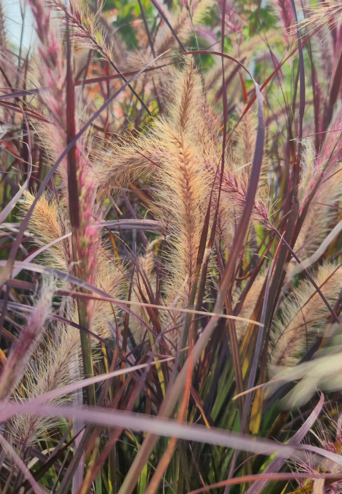

Pennisetum — production card (v11 template, refined)

Purple Fountain Grass
Pennisetum 'Rubrum'
▶ Listen

 60–90 cm H × 45–60 cm W
60–90 cm H × 45–60 cm W
Plant Power Points

Jul–Oct
1/5
3/5
Easy2/5

Well-drained
Avoid heavy clay & winter waterlogging


ASPECT
Any aspect
Full sun
 Shade
Full sun
Shade
Full sun